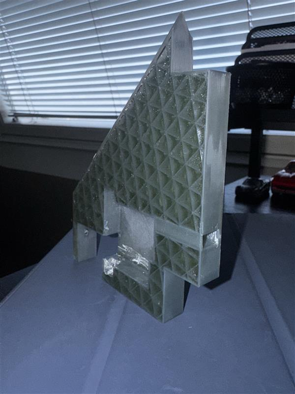
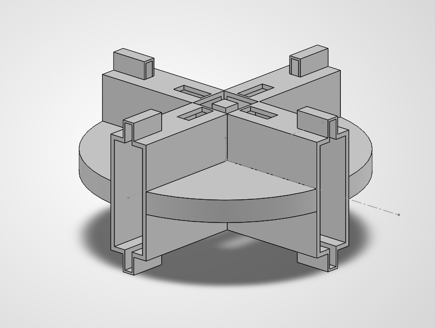
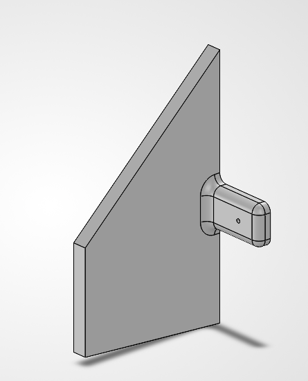
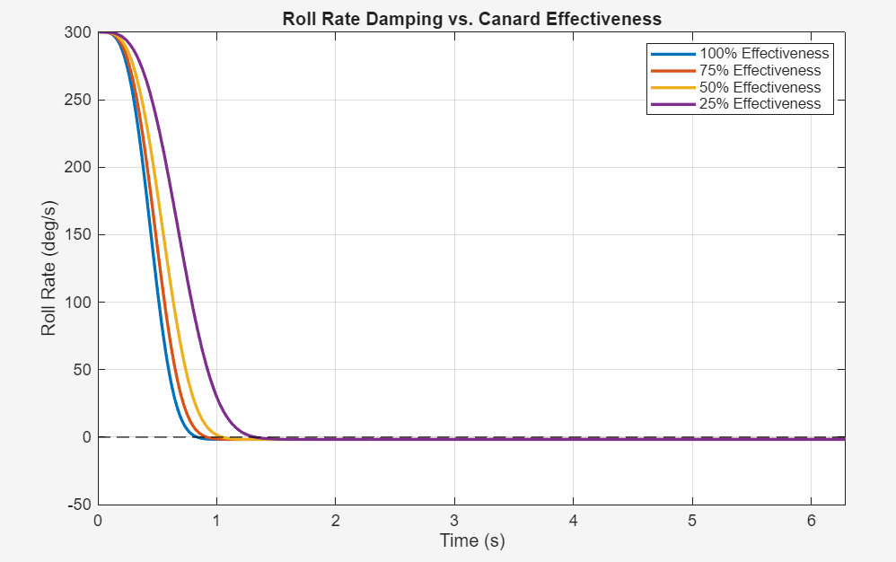

Active Rocket Roll Control
Ongoing Project
Current stage: First-order simulation and first-iteration mechanical design
Project overview
I'm leading the development of a subscale active roll-control rocket for Longhorn Rocketry using four independently actuated forward canards and four stationary aft fins. My work spans the vehicle architecture, mechanical integration, preliminary aerodynamic and actuator analysis, and development of the roll-control simulation used to evaluate the design before flight testing.
The current goal is to actively reduce vehicle roll rate while keeping the system simple enough to manufacture, test, and iterate on a subscale vehicle.
Design evolution
The project started with servo-actuated tabs built into the main fins. I worked on early vehicle modeling, CAD, actuator packaging, and physical prototypes. That work exposed a practical problem: the servo was buried inside the fin structure, and the team still needed a good way to access, remove, and reuse it. We discussed an access or casing idea, but never developed it into a finished design.
One prototype took inspiration from a printed internal lattice filled with epoxy. We recreated the idea to see how the part would turn out. It was extremely rigid and extremely heavy. The added mass would have shifted the vehicle CG downward and reduced stability, but the part was never load tested, aerodynamically tested, or flown.

The prior design raised actuator packaging and serviceabilityissues. With the servos buried inside the fin structure, accessing or replacing the hardware became difficult. I decided to move the project toward a dedicated canard-based roll-control vehicle, separating the actuated control surfaces from the stationary fins and giving the actuator system its own packaging architecture.
Current vehicle
I designed the current vehicle baseline in OpenRocket, working through overall sizing, motor selection, mass, stability, and the nominal flight configuration. The vehicle is 3.1 inches in diameter, 28.85 inches long, and approximately 36.3 ounces loaded. With the F67-6 baseline motor, the model has 1.38 calibers of static stability and predicts a maximum velocity of approximately 195 ft/s, an apogee of approximately 567 ft, and about 6.29 seconds to apogee.
An earlier vehicle concept used an airframe around 2.6 inches in diameter. Once I brought the actual servo geometry into SolidWorks, the smaller packaging size was no longer practical. I increased the airframe to 3.1 inches and carried the real actuator geometry into the rest of the vehicle design rather than treating packaging as a later integration problem.

Canard bay and Mechanical Integration
I designed the first canard-bay iteration around four servos arranged radially inside the 3.1-inch airframe, with each actuator aligned to a corresponding canard. The canard root incorporates the servo-horn interface directly, allowing the actuator and control surface to be packaged as one integrated mechanism.
The layout addresses one of the main problems with the earlier design which was actuator access and integration. I'm currently refining fit, canard alignment, assembly access, interference through the commanded deflection range, and integration with the airframe before manufacturing the first hardware.




Actuator load check
Because servos were already bought for our project, I performed a preliminary aerodynamic load check to determine whether they provided reasonable torque margin at the maximum torque expected according to the current OpenRocket simulation.
Assumptions for the preliminary check
- Pressure: 1 atm
- Temperature: 311 K
- Maximum velocity: approximately 195 ft/s
- Canard deflection: 15°
- Lift slope: ideal thin-airfoil CLα = 2π rad−1
- CL used: approximately 1.6
- Canard area: 2.625 in²
- Load location: quarter-MAC
- Aerodynamic load multiplier: 3×
The ideal two-dimensional lift slope is a conservative load-screening reference here, not a prediction of the real low-aspect-ratio canard. Quarter-MAC is a first-order estimate of the aerodynamic load location, and the 3× multiplier is a preliminary choice rather than a formal design requirement.
I used the mean aerodynamic chord because of the trapezoidal fin shape. The root chord is 2.50 inches, the tip chord is 1.00 inch, and the span is 1.50 inches, and a mean aerodynamic chord of approximately 1.86 inches. The estimated aerodynamic load location and the servo pivot axis produce a torque arm of 0.336 inches, or 0.00853 m.
.jpg)
ρ = P / (R T) ≈ 1.14 kg/m³
q = ½ ρ V² ≈ 2.00 kPa
F = q S CL ≈ 5.50 N per canard
Thinge = F d ≈ 0.0470 N·m
Tpreliminary = 3 Thinge ≈ 0.141 N·m per servo
| Preliminary load result | |
|---|---|
| Aerodynamic force / canard | ~5.50 N |
| Aerodynamic hinge torque | ~0.0470 N·m |
| Preliminary design hinge torque | ~0.141 N·m |
| Published stall-torque comparison | |
|---|---|
| Stall torque at 4.8 V | ~0.392 N·m |
| Stall torque at 6.0 V | ~0.451 N·m |
| Stall-torque margin at 4.8 V | ~2.8× |
| Stall-torque margin at 6.0 V | ~3.2× |
Roll dynamics and controller
To evaluate control authority before building hardware, I developed a 1-DOF MATLAB simulation of the vehicle's closed-loop roll dynamics. The controller targets roll rate p and commands the four canards to oppose vehicle rotation.
φ̇ = p
Iroll ṗ = τroll
δcmd = −Kp p
The model uses a CAD-derived roll inertia of approximately 0.003096 kg·m², a proportional roll-rate controller with proportional gain Kp = 0.03, ±15° canard command limits, and a rate-limited model of the selected servo. Roll angle, roll rate, and actual canard deflection are included as simulation states.
The Corona DS-239MG is represented with a simplified rate limit based on its published 6 V speed of 0.14 s per 60°, or approximately 428.6 deg/s. Actual canard deflection is included as a simulation state rather than assuming the actuator moves instantaneously.
OpenRocket trajectory coupling
Rather than assuming a constant maximum velocity, I exported the ascent trajectory from OpenRocket and interpolated V(t) during MATLAB integration. This makes the dynamic pressure and available canard control torque change throughout the simulated ascent.
q(t) = ½ ρ V(t)²
F = q S CL
τroll = N F r
Here, N = 4 canards and r is the radial roll moment arm from the vehicle centerline to the approximate canard aerodynamic load location. The simulation currently runs through the predicted apogee at approximately 6.29 seconds.
Control-authority sensitivity study
The largest uncertainty in the current control model is the aerodynamic effectiveness of the low-aspect-ratio canards. I did not want the control-authority conclusion to depend entirely on the ideal 2D lift slope, so I reran the model at 100%, 75%, 50%, and 25% of the idealized aerodynamic effectiveness.

For a representative 300 deg/s initial roll rate, the controller damps the vehicle toward zero in all four cases, with reduced aerodynamic effectiveness increasing the damping time.
I expanded the analysis into a 16-case sensitivity sweep using initial roll rates of 100, 300, 600, and 900 deg/s across the same four aerodynamic-effectiveness levels. I used the time required to reach a roll rate ≤ 10 deg/s as the comparison metric.

All 16 simulated cases reached the 10 deg/s threshold. The most conservative tested condition—900 deg/s initial roll rate at 25% aerodynamic effectiveness reached the threshold in approximately 1.26 seconds. These results suggest the current geometry has useful control-authority margin across the tested uncertainty range and give me a baseline to compare against future hardware and flight data.
Model scope
The current simulation focuses on the roll axis using 1-DOF rigid-body dynamics, constant atmospheric density, a preliminary canard aerodynamic model, and simplified rate-limited actuator dynamics. Pitch/yaw coupling and aerodynamic interference are not yet included. As hardware testing begins, I plan to use measured actuator and flight data to refine the model.
Next steps
The next phase is to move from the current CAD and simulation work into hardware testing. I'm refining the canard bay for manufacturing, then will bench-test the actuator system and use the onboard IMU to measure roll response during closed-loop testing. The first subscale flights will provide the data needed to compare the physical vehicle against the MATLAB model and guide the next design iteration.